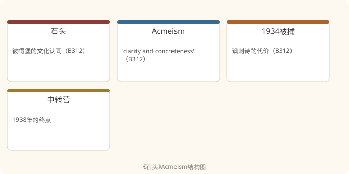

石头
一、基本信息
| 作者 | 奥西普·曼德尔施塔姆 |
|---|---|
| 成书/出版 | 1913年（Britannica：In 1913 his father underwrote the publication of his first slim volume of verse, Kamen (Stone)） Isaac Bashevis Singer — Encyclopaedia Britannica 与 Elias Canetti — Encyclopaedia Britannica（百科全书） |
| 国别/地区 | 俄国 |
| 时代 | 现当代 · 20世纪初 |
| 体裁 | 诗集 |
| 语言 | 俄语 |

《石头》Acmeism结构图（主题·结构图）
二、创作背景
Britannica（B312）：'In 1913 his father underwrote the publication of his first slim volume of verse, Kamen (Stone)'——父亲出资出版首部小诗集。
题目象征（B312）：Acmeists'identification with the cultural essence of St. Petersburg'（与彼得堡文化本质的认同——B312）。
Acmeism（B312）：'rejected the vague mysticism of Russian Symbolism and demanded clarity and concreteness'。
结局（B312）：1934年5月3日因讽刺诗被捕——'Sentenced to five years in a labour camp'，1938-12-27卒于中转营。
三、内容脉络
彼得堡的建筑与文化：海军大厦、圣索菲亚（篇目通说待核）。
四、主要人物表
| 人物 | 身份 | 说明 |
|---|---|---|
| 曼德尔施塔姆 | 诗人 | Acmeist（B312） |
五、主题与艺术特点
- 石头：彼得堡文化的认同（B312）。
- 建筑与诗歌的同构（通说待核）。
- Acmeism 的'清晰与具体'（B312：clarity and concreteness）。
六、影响与评论
- Britannica：Acmeism——'rejected the vague mysticism of Russian Symbolism'（B312）。
Isaac Bashevis Singer — Encyclopaedia Britannica 与 Elias Canetti — Encyclopaedia Britannica（百科全书） - Britannica：'identification with the cultural essence of St. Petersburg'（B312）。
Isaac Bashevis Singer — Encyclopaedia Britannica 与 Elias Canetti — Encyclopaedia Britannica（百科全书）
七、阅读建议
难点
- Acmeism 与 Symbolism 的对立。
- 彼得堡建筑史。
- 《石头》（Princeton University Press 英译本，通说待核）。
- 俄文原版。
曼德尔施塔姆诗集首选。
八、待核实
- 《石头》1913年篇目（33首说）核对。
- 1930年《石头》增订版待核。
- 'Notre Dame'首篇待核。
本页主要来源
奥西普·曼德尔施塔姆的其他收录作品：石头